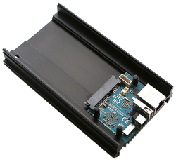

Installing Nextcloud with Nextcloud-Snap
written by ushills on 2019-03-10
Following on from my previous post, this time when I upgraded my hardware to run Nextcloud I installed Nextcloud-snap which is Nextcloud packaged as a snap.
For those who have not come across snaps and the snappy package manager before Snaps have a number of advantages. Although introduced by Canonical (the organisation behind Ubuntu), they generally work across the majority of Linux Distributions and are OS agnostic, i.e. the snap does not have to be compiled for different OS's, and as long as you can install the Snappy Package Manager you can install almost any snap.
The other significant advantage, particularly, with a Nextcloud instance is that that the snap install not only installs Nextcloud but installs all the required dependencies in a single sandboxed environment that just works out of the box. Also, snaps automatically upgrade and upgrades are checked daily, therefore, the nextcloud instance will always be updated to the latest stable version.
Installation, once you have the Snappy Package Manager installed, is as simple as:
sudo snap install nextcloud
Nextcloud-snap currently installs:
- Nextcloud 15.0.5
- Apache 2.4
- PHP 7.2
- MySQL 5.7
- Redis 4.0
- mDNS for network discovery
Another advantage, and one I only realised as I changed my hardware, is that all of the snap configuration and data is contained in one folder, my my case /var/snap/nextcloud, which means that you can back up the folder in its entirety and restore it by copying it to a /var/snap folder on another machine with Nexcloud-snap installed.
This self-contained approach with snaps has a major implication with backing up and restoring, especially when considered in the context of running your OS using the BTRFS filesystem, which is the subject of my next post.
Continue readingUsing Nextcloud with Odroid HC1
written by ushills on 2019-03-09
For those that do not know Nextcloud is an open-source alternative to Dropbox and other cloud file storage providers, that you can host yourself on a VPS or your own on-premise server. As such only you have access to your information and the side benefit is that you learn some server administration along the way.
I have been using Nextcloud for a number of years now on a Raspberry Pi and although I was happy with the performance the Raspberry Pi is slightly limited with disk access speed due to only having USB 2.0 connections.
While searching for a replacement I came across the Odroid HC1 which is designed to work as a home server. The Odroid HC1 comes with a SATA connection to connect to an internal 2.5' hard drive and has plenty of horsepower with Samsung Exynos5422 ARM® Cortex™-A15 Quad 2.0GHz/Cortex™-A7 Quad 1.4GHz, 2GB of DDR3 Ram and a large heat sink on the bottom.

With the native SATA connection and Gigabit Ethernet, the HC1 is a significant upgrade over the Raspberry Pi and is equivalent to most VPS. I have a hard disk drive connected to mine but you could just as easily use an SSD.
Having used many different operating systems on single board computers (SBC) in the past, this SBC is well supported by Armbian which is a version of Debian, however, other OS's such as DietPi amongst others are also useable.
In my next post, I will explain how I installed Nextcloud and some of the important choices I made to improve the resilience of this self-hosted installation.
Continue readingUsing AWSCLI with Nextcloud
written by ushills on 2018-05-13
Amazon s3 is a cheap and secure place to store files and therefore ideal for off-site secure backups.
There is a convenient python command line interface for linux that you can install with the following. console
sudo pip install awscli
Go to IAM Management Console and create a new user and create access keys
sudo aws configure
AWS Access Key ID [None]: {enter access key}
AWS Secret Access Key [None]: {enter secret key}
Default region name [None]: eu-west-1
Default output format [None]:
To list your buckets use
sudo aws s3 ls
Now create a script that you can call to backup your files to AWS s3. I use the example below, and store the script in /etc/s3backup/
sudo nano s3_backup_nextcloud.sh
#!/bin/bash
ocdatapath='/var/www/owncloud/data'
s3backuppath='s3://{s3 bucket name for backup}'
day=`date +%Y-%m-%d:%H:%M:%S`
echo 'Starting s3 backup for' ${day}
#command to backup to s3 server
#exclude the tmp directory and .* files
aws s3 sync ${ocdatapath} ${s3backuppath} --exclude "/tmp" --exclude "updater-backup" --exclude "lost+found" --exclude ".*" --exclude "~*" --acl private --sse > /var/log/s3backup_${day}.log
Note that the suffix -sse adds server-side encryption to all uploaded files and therefore keeps your files secure but easily accessible without the need to store encryption keys and the logs of each backup are maintained under /var/log/s3backup_date.log.
Finally, make sure to make it executable with:
sudo chmod +x /etc/s3backup/s3_backup_nextcloud.shI have a crontab with the following which runs the backup every 6 hours.
0 0,6,12,18 * * * /etc/s3backup/s3_backup_nextcloud.shContinue reading